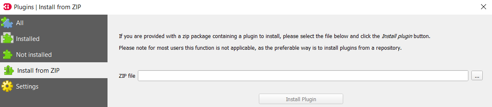

Installatie instructies¶
Vereisten¶
De HHNK toolbox heeft de volgende (systeem) vereisten:
QGIS version:¶
Plugin is compatibel met QGIS version 3.10 en hoger
Python packages¶
De plugin maakt gebruik van de volgende Python packages:
GDAL~=3.1.4
matplotlib~=3.1.3
numpy~=1.19.1
geopandas~=0.7.0
rtree~=0.9.7
pandas~=1.0.1
Shapely~=1.7.0
threedigrid~=1.1.1
ogr~=0.24.1
PyQt5~=5.11.3
#! hhnk_wsa_tests
Python depencendies installeren (OSGeo4W)¶
Installatie dependencies met OSGeo4W intaller¶
Als je QGIS hebt geinstalleerd met de OSGeo4W distributie, dan is het verstandig om de benodigde packages
via de installer te installeren. Deze handleiding gaat uit van een bestaande of nieuwe installatie waarin alleen
QGIS Desktop is geselecteerd onder de Desktop tab om een zo volledig mogelijk overzicht te geven:

Open de installer and selecteer ‘Advanced Install’:

Selecteer ‘install from internet’:

Het volgende scherm ziet er als volgt uit:

Check of het pad naar de OSGeo4W installatie klopt. Bepaal of je de installatie alleen voor de huidige gebruiker of voor alle gebruikers wil uitvoeren.
Klik ‘next’ totdat je het volgende scherm bereik en selecteer een ‘connection type’:

(Alleen als je in het vorige scherm ‘Direct Connection’ hebt geselecteerd) Selecteer een site waar de packages vandaan zullen worden gedownload (of vul handmatig een url in):

Klik volgende:

BELANGRIJK: Zorg dat ‘Keep’ is geselecteerd bovenin rechts (de andere opties zijn ‘Curr’, ‘Prev’ en ‘Exp’) als de
standaard optie. Zorg dat de eerste bovenste rij in het middelste veld (‘All  ) op
‘Default staat’. Je kunt de setting aanpassen door op het icoon naast ‘All’ te klikken.
) op
‘Default staat’. Je kunt de setting aanpassen door op het icoon naast ‘All’ te klikken.
Open de ‘Libs’ tab
Zoek de volgende packages om te installeren:
python3-geopandas (>= 0.7.0)
python3-pandas (>= 1.0.1)
python3-matplotlib (>= 3.1.3)
python3-pip (versie maakt niet uit)
Als je niet van plan bent om de 3diToolbox ook te installeren (als je dat wel van plan bent,
sla deze package dan over):
python3-h5py (2.10.0)
Voorbeeld:

Click op de ‘mode’ knop () totdat een installatie is geselecteerd (dit is te zien aan
het feit dat er een versie staat)
Klik volgende. Er wordt je nu gevraagd een aantal dependencies te installeren waaronder een aantal packages die nodig zijn voor deze plugin:
gdal/ogr (3.1.4) Nodig voor ```QGIS``` installatie
numpy (1.19.1) Nodig voor ```QGIS``` installatie
PyQt5 (5.11.3) Nodig voor ```QGIS``` installatie
sqlite3 Nodig voor ```QGIS``` installatie
setuptools (45.2.0) Nodig voor ```matplotlib``` installatie
Shapely (1.7.0) Nodig voor ```geopandas``` installatie
fiona (1.8.10) Nodig voor ```geopandas``` installatie
Installatie dependencies met OSGeo4W command prompt¶
Ga naar de map waar OSGeo4W is geinstalleerd

Open de OSGeo4W command prompt (zorg dat je de juiste rechten hebt, het kan zijn dat je de prompt als Administrator moet openen)
In de command prompt navigeer je naar de map van je OSGeo4W installatie door het volgende commando in te typen:
cd [path_to_osgeo4w_installation] (laat de blokhaken weg)
Type het volgende commando en druk op ‘Enter’:
call bin\py3_env.bat
Dit activeert de Python omgeving die deel uitmaakt van je OSGeo4W installatie. Je kunt checken of dit gewerkt
heeft door set in de command prompt te typen. Controleer dat PYTHONPATH en PYTHONHOME verwijzen naar
de juiste paden (in de OSGeo4W map).
Als je niet van plan bent om de 3di Toolbox te installeren, type je het volgende commando in de command prompt
en klik ‘Enter’:
pip install threedigrid
Als je van plan bent om de 3di Toolbox te installeren kun je dat het best nu doen. Wanneer je klaar bent met
die installatie of je de 3di Toolbox niet wilt installeren type je het volgende in de OSGeo4W command prompt:
pip install #!hhnk_wsa_tests
Je bent nu klaar om de plugin in QGIS te installeren!
De plugin installeren¶
Om de plugin te installeren open je QGIS en navigeer je naar plugins > manage and install plugins:

Dit opent de plugin manager. Klik op install from ZIP, selecteer de .zip file van de plugin en klik op
‘Install Plugin’. De plugin is nu geinstalleerd in QGIS.
Als dit niet werkt kun je de zip file ook direct uitpakken in de QGIS plugin map. Dit pad ziet er als volgt uit:
C:\Users\[gebruiker]\AppData\Roaming\QGIS\QGIS3\profiles\default\python\plugins (waar gebruiker de naam van de
gebruiker voor wie je de plugin installeert is)

Om de plugin te activeren klik je (in hetzelfde scherm als in de vorige stap) op ‘Installed’. Zoek de HHNK_toolbox in de lijst en zorg dat deze is aangevinkt.
Je kunt de plugin manager nu afsluiten.

De plugin is nu te vinden in de toolbar en in het menu onder ‘Plugins’. De plugin is nu klaar voor gebruik!